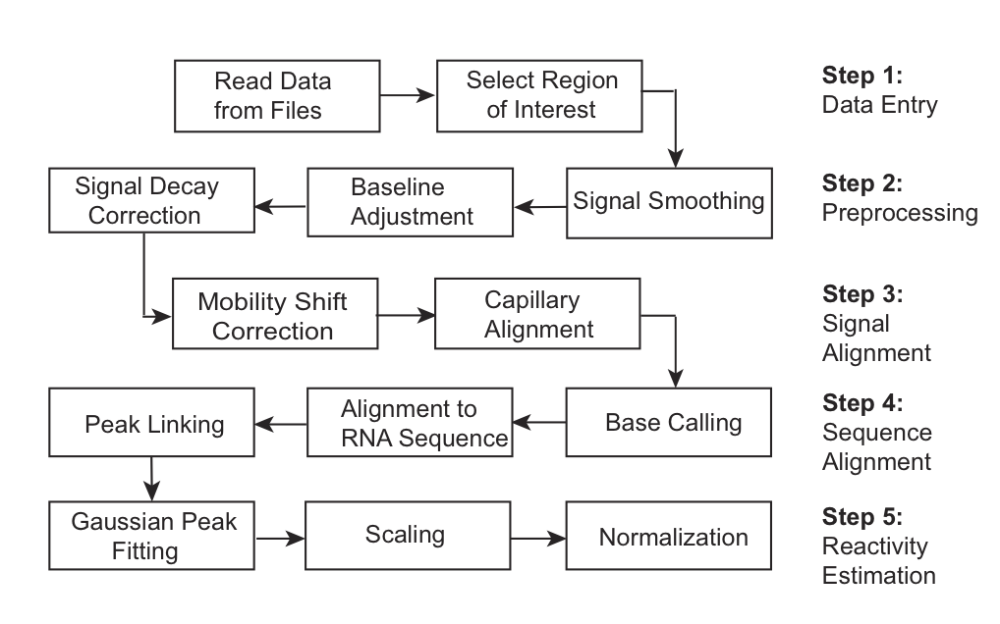

QuShape was designed to maximize quantitative accuracy while minimizing user involvement in analyzing data obtained from nucleic acid chemical probing experiments. The user controls QuShape via a graphic interface. This interface is comprised of the main Data View window, the Tool Inspector window, and the Script Inspector window. Results of every operation are plotted in the Data View window.
For efficient and accurate processing of nucleic acid probing data, we strongly recommend a "two-capillary" approach in which the primer extension reactions used to describe a single experiment are resolved in two capillaries. The first capillary includes the (+) reaction experiment and a sequencing lane to allow alignment to the known RNA sequence; the second contains the (-) reagent reaction and an identical sequencing reaction. The two-capillary approach strives for a good balance between efficient experimentation and reducing the number of required inter-capillary alignments. The process of extraction of single-nucleotide reactivity information from raw electropherogram traces is organized into five major steps.

Step 1: Data entry. Raw input data are read from the ABIF-type files (*.fsa) or text files chosen by the user. The user must select the region of interest along the elution time axis. Subsequent steps do not require user input.
Step 2: Preprocessing. Signal Smoothing and Baseline Adjustment are standard signal processing steps performed on the (+) reagent and (-) reagent traces and the ddNTP sequencing traces. These operations enhance the signals by removing high-frequency noise and baseline offset. Signal Decay Correction converts the fluorescence signal intensities to probabilities of primer termination.
Step 3: Signal alignment. Separations of the same reactions between different capillaries or use of different fluorescent labels result in slight differences in retention times. Therefore all data traces have to be aligned by time-shifting and time-scaling along the elution time axis. The Mobility Shift Correction operation aligns pairs of signals within each capillary, and the Capillary Alignment operation aligns signals across two capillaries.
Step 4: Sequence alignment. The Base Calling operation classifies all the peaks in the sequencing signal measured in the (-) reagent capillary as specific peaks produced by ddNTP-paired nucleotides and non-specific or background peaks corresponding to nucleotides of the other three bases. The algorithm relies on the ratio of the sizes of the linked peaks in the (-) reagent and sequencing signals. Next, the Alignment to RNA Sequence operation uses a modified Smith-Waterman algorithm to align peaks in the (-) reagent sequencing signal with the RNA sequence. Finally, the Peak Linking operation assigns nucleotide peaks in the (-) reagent sequencing signal to the corresponding peaks in the (+) reagent and (-) reagent signals.
Step 5: Reactivity estimation. The Gaussian Peak Fitting algorithm performs whole-signal Gaussian integration for all peaks in the (+) and (-) reagent signals, fitting each peak with a Gaussian function individually optimized for position, height, and width. The area of each peak is correlated with the primer termination probability, Pterm, of the corresponding nucleotide in the RNA sequence. The Scaling operation determines the magnitude of the scaling parameter. Normalization computes the probability of adduct formation, Padd, for each nucleotide. Although Padd is a true measure of the reactivity of a particular nucleotide, it is normalized using model-free statistics to a scale spanning 0 to ~2, where zero indicates no reactivity and 1.0 is the average intensity for highly reactive RNA positions. Nucleotides with normalized SHAPE reactivities 0-0.4, 0.4-0.85, and >0.85 correspond to unreactive, moderately reactive, and highly reactive positions, respectively.
Output: The final output of QuShape is a tab-delimited text file. This file contains integrated (+) and (-) reagent peak areas and their normalized SHAPE reactivities. The final SHAPE reactivity plot is also displayed in a graphic window.
Implementation: All tools and methods were implemented using version 2.6 of the Python programming language (http://www.python.org/). PyQt (http://www.riverbankcomputing.co.uk/pyqt/index.php) was used for designing the user interface and runs on all platforms supported by Qt including Windows, MacOS/X, and Linux. The NumPy and SciPy are the fundamental packages needed for scientific computing in Python (http://numpy.scipy.org/) and were used to manipulate data and arrays. Matplotlib (http://matplotlib.sourceforge.net/), a Python 2D plotting library, is used to produce quality figures in a variety of hardcopy formats and interactive environments across platforms. All packages are open-source software.